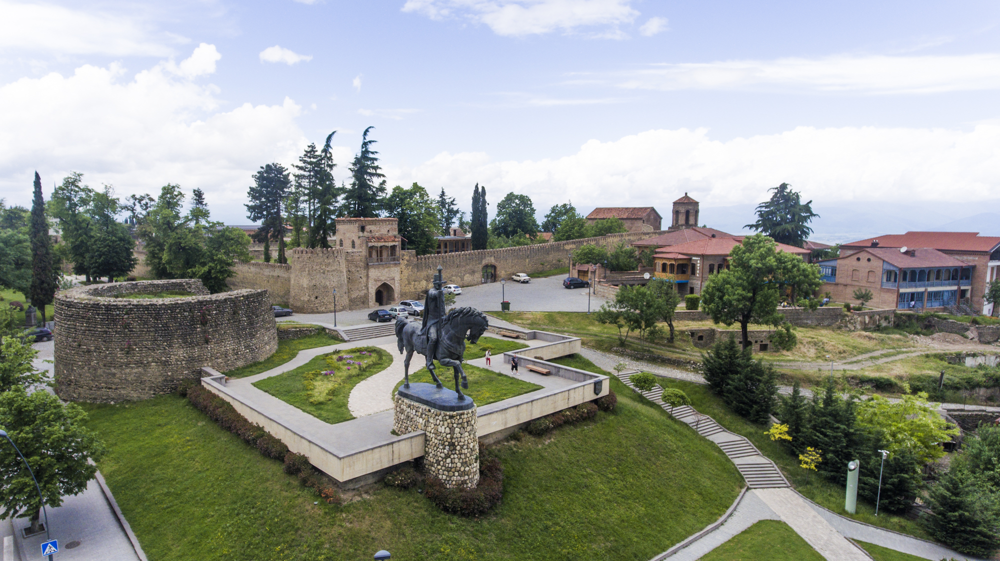

ბატონის ციხე
ისტორიული ძეგლი, აშენებულია 1667 – 1675 წლებში. აქ თქვენ ნახავთ კახეთის მეფის ციხეს, წმინდა არჩილის ეკლესიას, ციხესიმაგრეს კედელი, აბანოს და გვირაბს, რომელიც რომელი მიდის ციხის ტერიტორიაზე, და ასევე ირაკლი II ეკლესია. მისამართი: ირაკლი II გამზირი, შენობა 1, თელავი, საქართველო კოორდინატები:41.9184783, 45.475624,18
